CAD acid tests
Eleven deliberately hard parts and assemblies, each built in stages and checked against values worked out by hand, never taken from another CAD program. A score is the number of stages passed before the first one that fails. Each test is built from the kinds of geometry that broke most often in a 10,000-item stress corpus.
Results
| Program | Total | acid-1 Seamstress 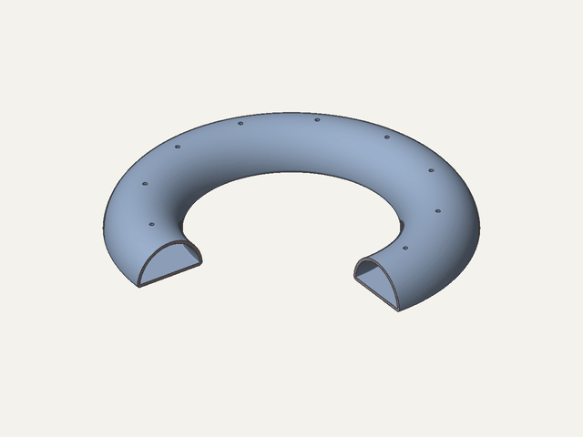 | acid-2 Spline bracelet 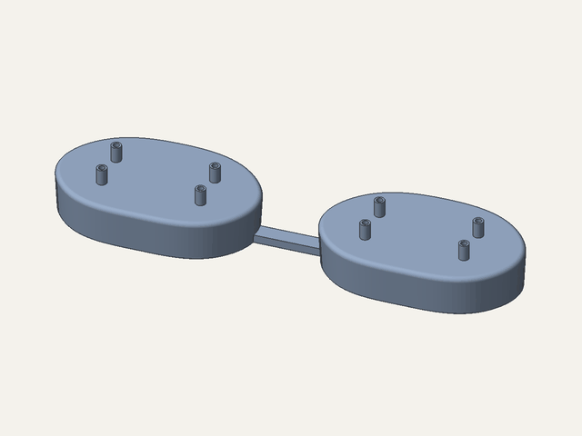 | acid-3 Hollow clockwork 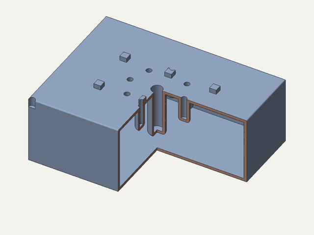 | acid-4 Crossfire 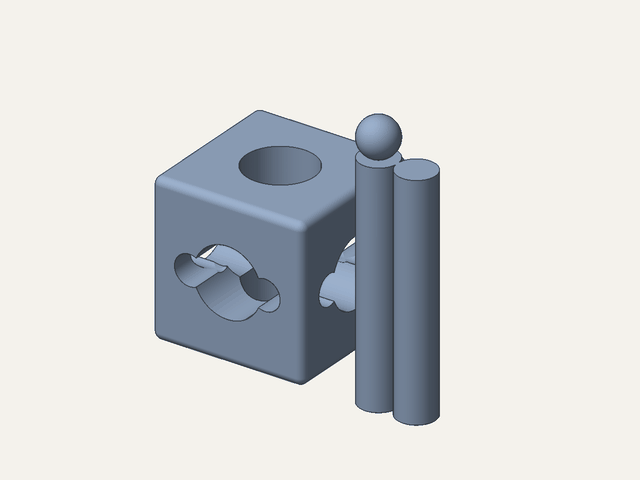 | acid-5 Corner cascade 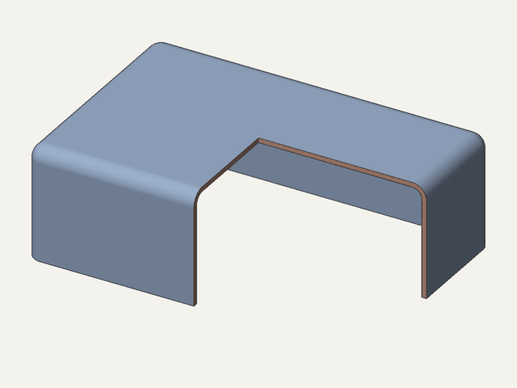 | acid-6 Needle and planet 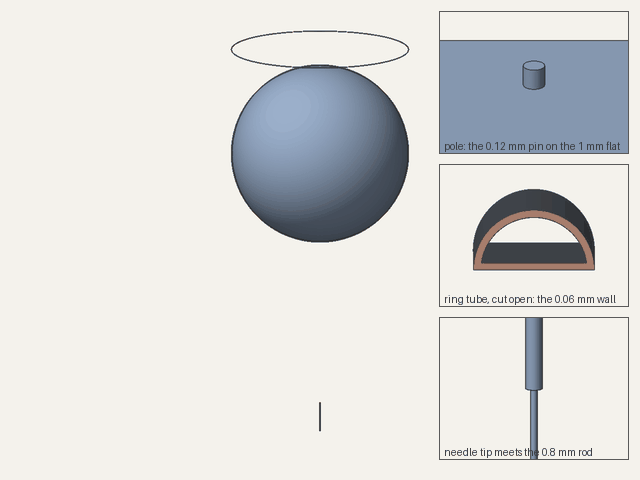 | acid-7 Volcano 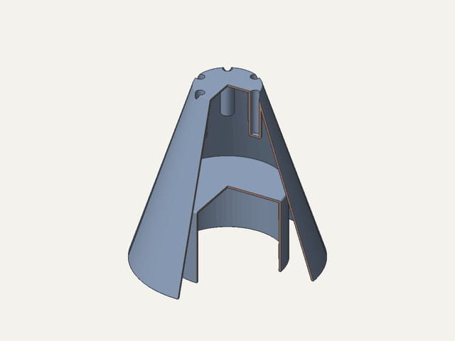 | acid-8 Lattice drum 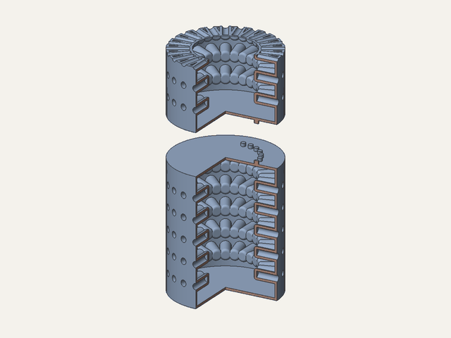 | acid-9 Twisted tower 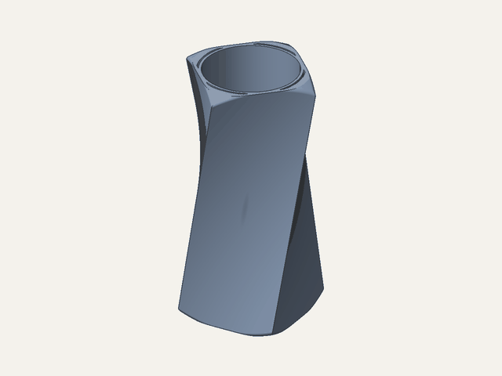 | acid-10 Near misses | acid-11 Orrery |
|---|---|---|---|---|---|---|---|---|---|---|---|---|
| SolidCraft 0.50.0 nightly 2026-11-26 | 50/72 | 8/8 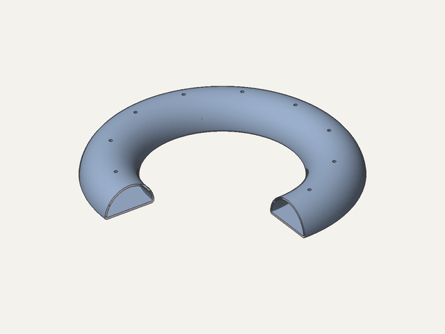 | 3/8refused at 4 | 5/7refused at 6 | 2/6refused at 3 | 3/6refused at 4 | 6/6 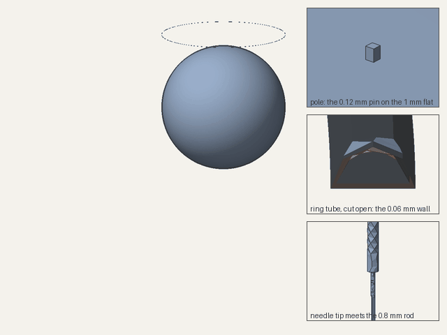 | 2/6refused at 3 | 7/7 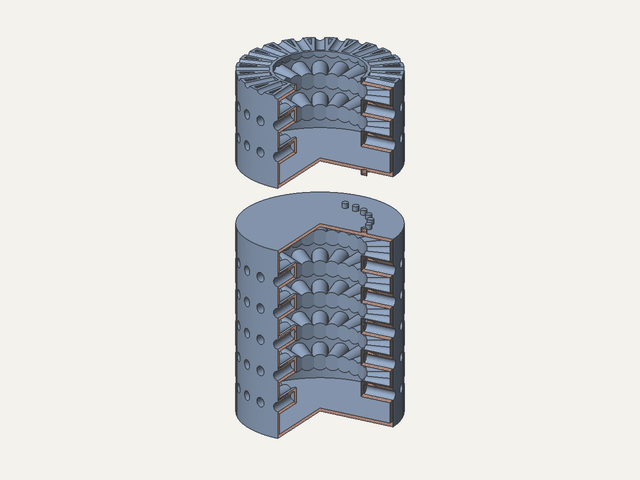 | 6/6 | 2/6refused at 3 | 6/6 |
| FreeCAD 1.1.4 | 46/72 | 3/8refused at 4 | 3/8refused at 4 | 5/7refused at 6 | 6/6 | 4/6refused at 5 | 3/6wrong result at 4 | 2/6wrong result at 3 | 4/7wrong result at 5 | 4/6refused at 5 | 6/6 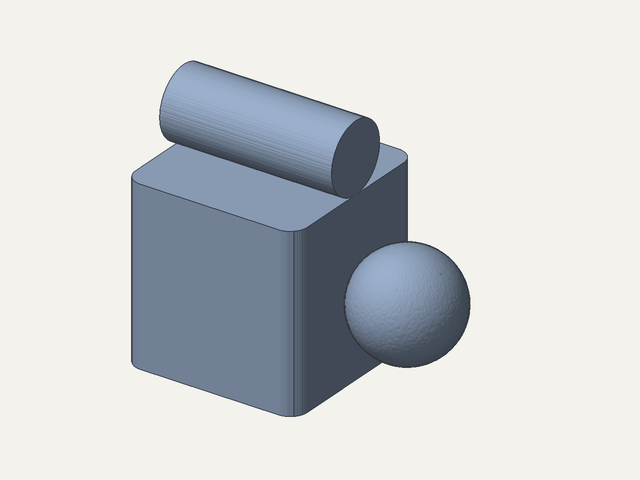 | 6/6 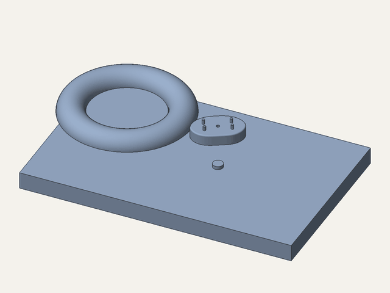 |
| Fusion 2706.1.17 | 60/72 | 6/8wrong result at 7 | 8/8 | 6/7refused at 7 | 6/6 | 6/6 | 4/6wrong result at 5 | 2/6wrong result at 3 | 5/7wrong result at 6 | 5/6wrong result at 6 | 6/6 | 6/6 |
| SOLIDWORKS 2026 SP4.1 | 47/72 | 8/8 | 3/8refused at 4 | 5/7refused at 6 | 4/6wrong result at 5 | 3/6refused at 4 | 6/6 | 5/6refused at 6 | 4/7wrong result at 5 | 1/6wrong result at 2 | 2/6wrong result at 3 | 6/6 |
| SolidCraft 0.49.0 | 40/72 | 4/8refused at 5 | 3/8refused at 4 | 5/7refused at 6 | 2/6refused at 3 | 3/6refused at 4 | 6/6 | 2/6refused at 3 | 4/7timeout at 5 | 3/6refused at 4 | 2/6refused at 3 | 6/6 |
| SolidCraft 0.47.0 | 38/72 | 4/8refused at 5 | 3/8refused at 4 | 5/7refused at 6 | 2/6refused at 3 | 3/6refused at 4 | 6/6 | 2/6refused at 3 | 2/7wrong result at 3 | 3/6refused at 4 | 2/6refused at 3 | 6/6 |
| SolidCraft 0.46.2 | 38/72 | 4/8refused at 5 | 3/8refused at 4 | 5/7refused at 6 | 2/6refused at 3 | 3/6refused at 4 | 6/6 | 2/6refused at 3 | 2/7wrong result at 3 | 3/6refused at 4 | 2/6refused at 3 | 6/6 |
| SolidCraft 0.46.1 | 37/72 | 4/8refused at 5 | 3/8refused at 4 | 5/7refused at 6 | 2/6refused at 3 | 3/6refused at 4 | 6/6 | 2/6refused at 3 | 2/7wrong result at 3 | 3/6refused at 4 | 1/6refused at 2 | 6/6 |
| SolidCraft 0.45.0 | 37/72 | 4/8refused at 5 | 3/8refused at 4 | 5/7refused at 6 | 2/6refused at 3 | 3/6refused at 4 | 6/6 | 2/6refused at 3 | 2/7wrong result at 3 | 3/6refused at 4 | 1/6refused at 2 | 6/6 |
| SolidCraft 0.44.0 | 34/72 | 3/8timeout at 4 | 3/8refused at 4 | 5/7refused at 6 | 2/6refused at 3 | 3/6refused at 4 | 4/6refused at 5 | 2/6refused at 3 | 2/7refused at 3 | 3/6refused at 4 | 1/6refused at 2 | 6/6 |
| SolidCraft 0.30.1 | 20/72 | 0/8wrong result at 1 | 3/8refused at 4 | 5/7refused at 6 | 1/6wrong result at 2 | 4/6refused at 5 | 0/6wrong result at 1 | 0/6wrong result at 1 | 0/7wrong result at 1 | 0/6wrong result at 1 | 1/6wrong result at 2 | 6/6 |


Green: every stage passes. Amber: some stages pass. Red: none pass. Under each score: what stopped it, and at which stage. "Refused" means the program raised an error. "Wrong result" means it built something that fails a check (body count, validity, volume, or a point that should be inside or outside). "Timeout" means it took longer than 300 s. Under each test's name, a sketch of what it should look like; in a cell where a program completed every stage, a picture of what it built.
What each test should look like
Each sketch is the test's final stage, built from TESTS.md as an implicit solid (exact primitives,
booleans, offsets and patterns, in numpy) with no CAD kernel, and checked against the hand-derived volumes in
expected/values.py, so it owes nothing to any program it is compared with. Rounds, drafts and the spline
outline are approximated, as each note says. Beside it is what each program built where it passed every stage, and
so every check. The harnesses render that on the run, in the same view and style: SolidCraft's and FreeCAD's are
here; Fusion's and SOLIDWORKS's appear with their next run. A split part is drawn in one piece, and a part built far
from the origin is drawn in its own frame.
acid-1 Seamstress
A half torus with features at its seam.
Sketch of the final stage, built from TESTS.md without a CAD kernel; volume 4,353 mm³, inside the window values.py allows (3,870 to 4,597 mm³). Approximate: the R 0.8 rounds are rolling-ball blends that stop at the notch rather than run around it.
acid-2 Spline bracelet
Rounds, joins, a draft and a shell on a spline outline.
Sketch of the final stage, built from TESTS.md without a CAD kernel; volume at stage 1, the last whose volume values.py pins down, within 0.01% of the analytic value. Approximate: the spline outline is sampled; the R 3 round and the 3° draft are blends of distances.
acid-3 Hollow clockwork
A closed shell around small features.
Sketch of the final stage, built from TESTS.md without a CAD kernel; volume 22,252 mm³, inside the window values.py allows (16,983 to 24,000 mm³). Approximate: the M6 thread is drawn as its plain Ø4.917 hole; the R 0.5 rounds stop at the notch.
acid-4 Crossfire
Equal crossing holes and near-coincident cylinders.
Sketch of the final stage, built from TESTS.md without a CAD kernel; volume 48,731 mm³, inside the window values.py allows (43,205 to 49,289 mm³). Approximate: exact except the R 2 rounds' corners, which are a rounded cube's.
acid-5 Corner cascade
Rounds near their limits, far from the origin.
Sketch of the final stage, built from TESTS.md without a CAD kernel; volume 592 mm³, inside the window values.py allows (544 to 672 mm³). Approximate: the 0.00002 chamfer and 0.000025 round are far below a pixel and left out.
acid-6 Needle and planet
Extreme size ratios.
Sketch of the final stage, built from TESTS.md without a CAD kernel; volume at stage 1, the last whose volume values.py pins down, within 0.01% of the analytic value. Approximate: exact; the ring and needle are too thin to see whole, so the insets zoom in.
acid-7 Volcano
A draft that runs into holes.
Sketch of the final stage, built from TESTS.md without a CAD kernel; volume at stage 4, the last whose volume values.py pins down, within 0.01% of the analytic value. Approximate: the R 0.5 round is a blend along the rim only, not around the six break-outs.
acid-8 Lattice drum
Patterns on curved faces.
Sketch of the final stage, built from TESTS.md without a CAD kernel; volume at stage 4, the last whose volume values.py pins down, within 0.04% of the analytic value. Approximate: exact; a quarter is cut away to show the closed shell.
acid-9 Twisted tower
Ruled free-form faces against a sphere and a cylinder.
Sketch of the final stage, built from TESTS.md without a CAD kernel; volume at stage 4, the last whose volume values.py pins down, within 0.04% of the analytic value. Approximate: the twisted faces' distance is approximate; the R 1 rounds are rolling-ball blends.
acid-10 Near misses
Tolerance-sized slivers, 1 km from the origin.
Sketch of the final stage, built from TESTS.md without a CAD kernel; volume at stage 3, the last whose volume values.py pins down, within 0.01% of the analytic value. Approximate: the 0.00002 dips and groove are far below a pixel; drawn before the 1 km move.
acid-11 Orrery
An assembly with geared joints and a 0.5 mm near miss.
Sketch of the final stage, built from TESTS.md without a CAD kernel; values.py gives this test no volume to compare it with. Approximate: the parts at the start of the motion; the ring and cam are acid-1 and acid-2 at stage 3.
How a stage is checked
Each stage must build within 300 s, leave valid closed solids and the stated number of bodies, and give the right answer at a few probe points that must be inside or outside the part. That is the exact check that catches a feature which silently goes missing. Where a closed form exists, the volume must match too. Programs integrate volume numerically, so a volume gets 1e-5 relative tolerance. Spline solids get a ±0.5% window instead, because some programs integrate their volume coarsely: FreeCAD 1.1.4's is 0.15% low on the acid-2 outline.
Every test uses only built-in operations: solid modelling for acid-1 to acid-10, and the program's own assembly tools for acid-11 (in FreeCAD, its built-in Assembly workbench; in Fusion, joints and a motion link; in SOLIDWORKS, mates and Interference Detection). There is no sheet metal, and nothing from a plug-in or an add-on.
The construction, the picks and the expected values are in the
repository: TESTS.md, PLAN.md and
expected/values.py.
The tests
Seamstress: a half torus with features at its seam
Periodic surfaces such as tori, cylinders and spheres have a seam, where the surface parameter wraps from 360° back to 0°. Most kernels store a face that crosses the seam as two pieces, or with a special edge. A feature placed one tolerance away from the seam forces the kernel to decide whether the two are touching. Many kernels then build an edge they later reject. In the stress corpus this broke boss, notch and round operations on half tori at every scale (solidcraft#18274, #18308, #18270).
- intersection curves that run within 1e-5 of a seam;
- deciding whether two things touch, at tolerance;
- rounds that follow a loop interrupted by a notch;
- an inward shell of a torus;
- holes through thin curved walls;
- precision once the part is 10 m from the origin.
- Make a torus about the Z axis with a Ø60 centre circle and a Ø16 tube. Keep the half with Z ≥ 0, so the body has a flat annular face at Z = 0.
- On the flat face, add a Ø1.9 × 1.9 cylindrical boss pointing down (−Z). Centre it on the centre circle at Y = 0.95001 (X > 0), so its side is 0.00001 clear of the 0° seam, which lies in the plane Y = 0.
- In the outer rim of the flat face, cut a Ø1.4 round notch 3 deep at 90° (on +Y), centred on the rim edge.
- Round both edge loops of the flat face (the inner and the outer circle) with R 0.8. The outer loop now runs around the notch.
- Shell the body inward to 0.6 walls, removing the boss's end face.
- Cut 12 vertical Ø1 holes right through the body on the centre circle, every 30° starting at 15°.
- Split the body with the plane Z = 4 and keep both bodies.
- Move everything 10000 along +X.
Why. Periodic surfaces such as tori, cylinders and spheres have a seam, where the surface parameter wraps from 360° back to 0°. Most kernels store a face that crosses the seam as two pieces, or with a special edge. A feature placed one tolerance away from the seam forces the kernel to decide whether the two are touching. Many kernels then build an edge they later reject. In the stress corpus this broke boss, notch and round operations on half tori at every scale (solidcraft#18274, #18308, #18270).
OCCError: class StdFail_NotDone BRep_API: command not donevolume change 0.055368 outside [0.000000, 0.000000]error: step 6 (solid.shell): invalid input: shell: a wall of 0.6 mm does not fit: the walls offset from this body do not close into a solid; a wall of 0.15 mm buildserror: step 6 (solid.shell): SMLib shell: operation: the offset is refused: a gap in its offset's loops cannot be bridged within tolerance: offset::offset_executive::step_gaps: the offset of face 2 leaves a gap in its loops, and the straight segment that woulderror: step 6 (solid.shell): SMLib shell: operation: the offset is refused: a gap in its offset's loops cannot be bridged within tolerance: offset::offset_executive::step_gaps: the offset of face 2 leaves a gap in its loops, and the straight segment that woulderror: step 6 (solid.shell): SMLib shell: operation: the offset is refused: a gap in its offset's loops cannot be bridged within tolerance: offset::offset_executive::step_gaps: the offset of face 2 leaves a gap in its loops, and the straight segment that woulderror: step 6 (solid.shell): SMLib shell: operation: the offset is refused: a gap in its offset's loops cannot be bridged within tolerance: offset::offset_executive::step_gaps: the offset of face 2 leaves a gap in its loops, and the straight segment that wouldno result within 300 svolume 18946.922158, expected 18949.640450Spline bracelet: rounds, joins, a draft and a shell on a spline outline
Real parts have free-form outlines. Their side faces are B-spline surfaces, not planes or cylinders. A round on a B-spline edge has no closed form, so the kernel has to march along it numerically. Every later operation then has to intersect that blend surface with something else. In the stress corpus, rounds on spline outlines took minutes (solidcraft#18294). Joins onto the rounded body were slower still, and drafts of spline sides were refused (#18541).
- rolling-ball blends along a free-form edge;
- booleans between cylinders and blend surfaces;
- a draft of a free-form face;
- an inward shell of a body bounded by spline surfaces and blends;
- a mirror and join that must merge two such bodies.
- Extrude the outline 25 upward from Z = 0.
- Round the top edge loop with R 3.
- Join four Ø6 × 10 cylinders standing on the top face, at (±30, ±12).
- Draft the side face 3° outward, with the bottom face as the neutral plane.
- Shell the body inward to 1.5, removing the bottom face.
- Cut a Ø4 hole along Z through each cylinder and the body.
- Mirror the body across the plane X = 80, giving two bodies.
- Join the two bodies with a bar from (55, −5, 0) to (105, 5, 5).
Why. Real parts have free-form outlines. Their side faces are B-spline surfaces, not planes or cylinders. A round on a B-spline edge has no closed form, so the kernel has to march along it numerically. Every later operation then has to intersect that blend surface with something else. In the stress corpus, rounds on spline outlines took minutes (solidcraft#18294). Joins onto the rounded body were slower still, and drafts of spline sides were refused (#18541).
The outline is the C2 periodic cubic spline through (60, 0), (42, 30), (0, 40), (−42, 30), (−60, 0), (−42, −28), (0, −35) and (42, −28), parameterised by chord length. It is C2 everywhere, including at (60, 0).
Some programs' "periodic interpolation" makes a curve that is only C1 at its first point. That is a different curve, so build this one exactly: its Bézier control points are printed by python expected/values.py --poles.
error: step 10 (solid.draft): not supported yet: draft: a drafted face is neither a plane nor a cone or cylinderRuntimeError: the draft did not build in the asked direction: no faces can be usedDraft-side: the 3-degree outward draft is refused (SOLIDWORKS gives no reason); flipped, it builds the inward oneerror: step 10 (solid.draft): not supported yet: draft: a drafted face is neither a plane nor a cone or cylindererror: step 10 (solid.draft): not supported yet: SMLib draft for this geometryerror: step 10 (solid.draft): not supported yet: SMLib draft for this geometryerror: step 10 (solid.draft): not supported yet: SMLib draft for this geometryerror: step 10 (solid.draft): not supported yet: SMLib draft for this geometryerror: step 10 (solid.draft): not supported yet: SMLib draft for this geometryerror: step 10 (solid.draft): offset: draft: the faces next to the drafted walls must be planes or cylindersHollow clockwork: a closed shell around small features
A shell offsets every face inward by the wall thickness. If a feature is only slightly more than twice the wall wide, the offset faces nearly meet, and the kernel has to work out the new topology. Get it slightly wrong and it either refuses, or leaves a self-intersecting solid. A modelled thread makes this worse, because its offset is a helical sweep. In the stress corpus this was the largest single cause of refusals: 421 items (solidcraft#18239), plus #8509 and #18278.
- offset surfaces that nearly collide;
- a closed internal void, where no face is removed;
- offsets of a helical thread;
- a notch 0.00001 clear of a block corner, which leaves a sliver of material;
- rounds along a loop interrupted by that notch.
- Make a 80 × 60 × 30 block with one corner at the origin.
- On the top face, add six square pads 3 × 3 × 2, centred in a 3 × 2 grid at 20 pitch starting at (20, 20).
- Cut a Ø4.917 hole 20 deep at the top face's centre (40, 30), the minor diameter of M6 × 1. Give its top 15 a modelled M6 × 1 thread.
- Cut 8 Ø2.5 holes in a circular pattern of radius 12 about that centre, from Z = 32 down to Z = 20, so they also cut the pads they cross.
- Cut a Ø3 notch 4 deep centred on the top face's front edge, 1.50001 from the left end, so it is 0.00001 clear of the corner.
- Shell to 1.2 walls with no face removed, leaving a closed internal void.
- Round every edge of the top face's outer loop with R 0.5.
Why. A shell offsets every face inward by the wall thickness. If a feature is only slightly more than twice the wall wide, the offset faces nearly meet, and the kernel has to work out the new topology. Get it slightly wrong and it either refuses, or leaves a self-intersecting solid. A modelled thread makes this worse, because its offset is a helical sweep. In the stress corpus this was the largest single cause of refusals: 421 items (solidcraft#18239), plus #8509 and #18278.
error: step 19 (solid.shell): invalid input: shell: a wall of 1.2 mm does not fit, and no thinner wall builds either, so the wall is not the obstacle: a face of the body curves too tightly to offset inwards, or the body has faces too small or too many to offseCADKernelError: BRepOffsetAPI_MakeOffsetShape not donereturn _fusion.FilletFeatures_add(self, input) ~~~~~~~~~~~~~~~~~~~~~~~~~~^^^^^^^^^^^^^ RuntimeError: 3 : Fillet1 / Compute Failed // ASM_BAD_CONTAINMENT - There was a problem combining geometry together. If attempting a Join/Cut/Intersect, try to ensure thatShell: refused: Shell1: The shell operation failed to complete. One of the faces may offset into an adjacent face, a small face may need to be eliminated, or one of the faces may have a radius of curvature which is smaller than the shell thickness. Please use error: step 19 (solid.shell): invalid input: shell: a wall of 1.2 mm does not fit, and no thinner wall builds either, so the wall is not the obstacle: a face of the body curves too tightly to offset inwards, or the body has faces too small or too many to offseerror: step 19 (solid.shell): SMLib shell: operation: the offset is refused: an edge of its offset closes to nothing: a vertex moves onto or past the edge's other end: offset::offset_executive::step_gaps: the offset moves a vertex of edge 41 to or past the edgerror: step 19 (solid.shell): SMLib shell: operation: the offset is refused: an edge of its offset closes to nothing: a vertex moves onto or past the edge's other end: offset::offset_executive::step_gaps: the offset moves a vertex of edge 41 to or past the edgerror: step 19 (solid.shell): SMLib shell: operation: the offset is refused: an edge of its offset closes to nothing: a vertex moves onto or past the edge's other end: offset::offset_executive::step_gaps: the offset moves a vertex of edge 41 to or past the edgerror: step 19 (solid.shell): SMLib shell: operation: the offset is refused: an edge of its offset closes to nothing: a vertex moves onto or past the edge's other end: offset::offset_executive::step_gaps: the offset moves a vertex of edge 41 to or past the edgerror: step 19 (solid.shell): SMLib shell: operation: the offset is refused: an edge of its offset closes to nothing: a vertex moves onto or past the edge's other enderror: step 19 (solid.shell): invalid parameters for `solid.shell`: select 1…1000 facesCrossfire: equal crossing holes and near-coincident cylinders
When two cylinders of the same diameter cross, with axes that meet or nearly meet, their intersection curve degenerates: it pinches to a point, or splits into two curves. Kernels that trace intersections numerically lose track there. Two parallel cylinders that overlap by 0.00001 give a sliver face thinner than many kernels' tolerance. In the stress corpus both gave "not a closed solid" (solidcraft#18475, #18235).
- singular surface–surface intersections, from equal radii with axes crossing or nearly crossing;
- the tricylinder at the cube's centre;
- slivers 0.00001 wide;
- a sphere that only just dips into a cylinder's flat end;
- rounds on a cube whose faces are pierced by the holes.
- Make a 40 × 40 × 40 cube centred on the origin.
- Cut three Ø18 holes through it along X, Y and Z, all through the centre.
- Cut two Ø8 holes through it along X, at Y = ±10 and Z = 0, and two along Y, at X = ±10 and Z = 0.00001. Each Y hole crosses an X hole of the same diameter, with axes 0.00001 apart.
- Make a separate Ø10 cylinder along Z from Z = −30 to 30 at X = 26, which is 1 clear of the cube. Join to it a second one at X = 35.99999, so the two overlap by 0.00001.
- Join a Ø10 sphere centred at (26, 0, 34.99999), which dips 0.00001 into the first cylinder's top.
- Round the twelve edges of the cube with R 2. There are now two bodies.
Why. When two cylinders of the same diameter cross, with axes that meet or nearly meet, their intersection curve degenerates: it pinches to a point, or splits into two curves. Kernels that trace intersections numerically lose track there. Two parallel cylinders that overlap by 0.00001 give a sliver face thinner than many kernels' tolerance. In the stress corpus both gave "not a closed solid" (solidcraft#18475, #18235).
error: step 8 (solid.cylinder): body `Part` (SMLib's check fails it as it was before this feature): the operation failed: SMLib boolean: SMLib's check refuses the result (the first operand already fails it): 4 failed tests:3 bodies, expected 2; no solid of volume 9948.376731 (have 39190.470765, 9424.777955, 523.598776)error: step 8 (solid.cylinder): body `Part` (SMLib's check fails it as it was before this feature): the operation failed: SMLib boolean: SMLib's check refuses the result (the first operand already fails it): 4 failed tests:error: step 7 (solid.cylinder): SMLib boolean: operation: solidcore: SmApiBoolean: boolean::merge::p2::make_faceuse: the radial sector search at a common edge found no face use of the other operand; caused by topology::edge: no radial edge use is left after cuerror: step 7 (solid.cylinder): SMLib boolean: operation: solidcore: SmApiBoolean: boolean::merge::p2::make_faceuse: no radial edge use classifies the face's edge useerror: step 7 (solid.cylinder): SMLib boolean: operation: solidcore: SmApiBoolean: boolean::merge::p2::make_faceuse: no radial edge use classifies the face's edge useerror: step 7 (solid.cylinder): SMLib boolean: operation: solidcore: SmApiBoolean: boolean::merge::p2::make_faceuse: no radial edge use classifies the face's edge useerror: step 7 (solid.cylinder): SMLib boolean: operation: solidcore: SmApiBoolean: boolean::merge::p2::make_faceuse: no radial edge use classifies the face's edge usevolume 41713.442353, expected 41711.412903Corner cascade: rounds near their limits, far from the origin
Where rounds of nearly equal radius meet at a corner, the kernel has to build a corner patch between surfaces that are almost tangent. A round only slightly larger than a neighbouring chamfer leaves almost no room for its edges. Both are sensitive to floating-point error, and that error grows with distance from the origin. In the stress corpus a second round just under the first worked at the origin but failed 130 mm away (solidcraft#18461, #13551). A round beside a tiny chamfer failed with "unable to map new fillet edge" (#18204).
- corner blends between near-equal radii;
- blends of the order of the tolerance (0.000025 beside 0.00002);
- floating-point precision at 1 m from the origin;
- a shell through blended corners.
- Make a 30 × 20 × 10 block from (1000, 1000, 1000) to (1030, 1020, 1010).
- Round the four vertical edges with R 1.3.
- Round the top face's edge loop with R 1.29, just under the vertical rounds, so the two meet in corner blends at all four top corners.
- Chamfer the bottom edge along X at Y = 1000 with 0.00002 × 0.00002.
- Round the bottom edge along Y at X = 1000 with R 0.000025.
- Shell to 0.4 walls, removing the bottom face.
Why. Where rounds of nearly equal radius meet at a corner, the kernel has to build a corner patch between surfaces that are almost tangent. A round only slightly larger than a neighbouring chamfer leaves almost no room for its edges. Both are sensitive to floating-point error, and that error grows with distance from the origin. In the stress corpus a second round just under the first worked at the origin but failed 130 mm away (solidcraft#18461, #13551). A round beside a tiny chamfer failed with "unable to map new fillet edge" (#18204).
error: step 4 (solid.chamfer): SMLib chamfer: operation: the blend failed (status 1007): invalid_input: the size 0.00002 is below eight times the body's tolerance 0.00001, the smallest a fillet builds (a picked edge continues tangentially into the edge at (100OCCError: class StdFail_NotDone BRep_API: command not doneChamfer-x: refused: Chamfer1: The distance for a chamfer must be greater than or equal to 0.01 millimeters or 0.004 inches. : D1@Chamfer1error: step 4 (solid.chamfer): SMLib chamfer: operation: the blend failed (status 1007): invalid_input: the size 0.00002 is below eight times the body's tolerance 0.00001, the smallest a fillet builds (a picked edge continues tangentially into the edge at (100error: step 4 (solid.chamfer): SMLib chamfer: operation: the blend failed (status 1001): the fillet body has no faces: Fillet Surface Computation Failure: no fillet faces were made (a picked edge continues tangentially into the edge at (1000.381, 1000.381, 100error: step 4 (solid.chamfer): SMLib chamfer: operation: the blend failed (status 1001): the fillet body has no faces: Fillet Surface Computation Failure: no fillet faces were made (a picked edge continues tangentially into the edge at (1000.381, 1000.381, 100error: step 4 (solid.chamfer): SMLib chamfer: operation: the blend failed (status 1001): the fillet body has no faces: Fillet Surface Computation Failure: no fillet faces were made (a picked edge continues tangentially into the edge at (1000.381, 1000.381, 100error: step 4 (solid.chamfer): SMLib chamfer: operation: the blend failed (status 1001): the fillet body has no faces: Fillet Surface Computation Failure: no fillet faces were made (a picked edge continues tangentially into the edge at (1000.381, 1000.381, 100error: step 4 (solid.chamfer): SMLib chamfer: operation: the blend failed (status 1001): the fillet body has no faces: Fillet Surface Computation Failure: no fillet faces were made (a picked edge continues tangentially into the edge at (1000.381, 1000.381, 100error: step 5 (solid.fillet): invalid parameters for `solid.fillet`: [1000, 1010, 1000] is where 2 edges meet: give a point along one edge, such as its midpointNeedle and planet: extreme size ratios
A kernel's tolerances are absolute, typically 1e-7 or 1e-6 mm, but models are not all one size. Put a 0.12 mm feature on a 1000 mm sphere, and the feature is a relative 1e-4 of the part. Meanwhile the sphere's flat is only 0.00025 below its pole. A Ø1 tube bent into a Ø1000 ring has a curvature ratio of 1000 : 1. A 0.02° draft over 1000 mm moves the face by 0.35 mm, but changes its angle by an amount close to the angular tolerance. In the stress corpus these failed or were measured wrong (stress-corpus#109, #114, solidcraft#18288).
- relative precision across five orders of magnitude;
- a plane cutting a sphere just below its pole;
- an offset of a thin, large-radius torus;
- a draft at an angle near the angular tolerance;
- booleans between a huge body and a tiny one.
- Make a Ø1000 sphere centred on the origin. Cut it with the plane Z = 499.99975, which is 0.00025 below the pole and leaves a flat of Ø1.
- Join a Ø0.12 × 0.12 cylinder standing on that flat.
- Make a separate torus about the Z axis with a Ø1000 centre circle and a Ø1 tube. Keep its half with Z ≥ 0, and move it up to Z = 600.
- Hollow the half ring to 0.06 walls, leaving a closed void.
- Make a separate Ø1 × 1000 cylinder along Z from (0, 0, −1600) to (0, 0, −600). Draft its side 0.02° inward, with its bottom face as the neutral plane; its top shrinks to about Ø0.30.
- Join the sphere and the needle with a Ø0.8 rod along Z from (0, 0, −600) to (0, 0, −400). The ring stays separate, so there are two bodies.
Why. A kernel's tolerances are absolute, typically 1e-7 or 1e-6 mm, but models are not all one size. Put a 0.12 mm feature on a 1000 mm sphere, and the feature is a relative 1e-4 of the part. Meanwhile the sphere's flat is only 0.00025 below its pole. A Ø1 tube bent into a Ø1000 ring has a curvature ratio of 1000 : 1. A 0.02° draft over 1000 mm moves the face by 0.35 mm, but changes its angle by an amount close to the angular tolerance. In the stress corpus these failed or were measured wrong (stress-corpus#109, #114, solidcraft#18288).
1 bodies, expected 2; (500, 0, 600.47) should be insideno solid of volume 364.684642 (have 523598775.599558, 443.683413, 785.398163); (0.3, 0, -700) should be outside (is in)error: step 9 (solid.draft): SMLib draft: operation: the offset is refused: how far its neighbours extend to meet it has no certified boundvolume 523561635.857962, expected 523598775.598201Volcano: a draft that runs into holes
A draft tilts a face about its neutral edge, so every other edge of the face moves. If holes sit just inside the face's far edge, the tilted face sweeps into them. The kernel must then re-trim the face around each hole, and turn each hole's wall into a notch that breaks out through the side. In the stress corpus, drafts and offsets that ran into holes near an edge were refused (solidcraft#18629, #18301, #18252).
- a draft of a conical face that changes the body's topology, as six holes break out through the side;
- rounds along a loop that runs in and out of those break-outs;
- a pocket and a shell through all of it.
- Make a cone frustum on the Z axis, Ø200 at Z = 0 and Ø80 at Z = 200. Its side leans 16.70° inward.
- Cut six Ø10 holes 50 deep into the top face, on a circle of radius 32, which puts them 3 inside the rim.
- Draft the side face to lean 18° inward, with the bottom face as the neutral plane. The top rim shrinks to radius 35.02, so each hole, which reaches out to radius 37, now breaks through the side near the top.
- Round every edge of the top face's outer loop with R 0.5. The loop runs in and out of the six break-outs.
- Cut a Ø120 × 80 cylindrical pocket up into the bottom face.
- Shell to 2 walls, removing the bottom face.
Why. A draft tilts a face about its neutral edge, so every other edge of the face moves. If holes sit just inside the face's far edge, the tilted face sweeps into them. The kernel must then re-trim the face around each hole, and turn each hole's wall into a notch that breaks out through the side. In the stress corpus, drafts and offsets that ran into holes near an edge were refused (solidcraft#18629, #18301, #18252).
A draft angle is measured from the pull direction (+Z), as CAD programs define it. It is not added to the face's existing taper.
error: step 8 (solid.draft): SMLib draft: operation: the offset is refused: its offset's loops cross in a way the offset cannot resolve: the results are not merged, so the walls the loops come from are not cut where they cross; only a merged offset cuts them: not a valid closed solid; volume 3061006.735973, expected 3061182.292048; (36, 0, 195) should be outsidevolume 3061287.323243, expected 3061182.292048Shell: refused: Shell1: The shell operation failed to complete. One of the faces may offset into an adjacent face, a small face may need to be eliminated, or one of the faces may have a radius of curvature which is smaller than the shell thickness. Please use error: step 8 (solid.draft): SMLib draft: operation: the offset is refused: its offset's loops cross in a way the offset cannot resolve: the results are not merged, so the walls the loops come from are not cut where they cross; only a merged offset cuts them: error: step 8 (solid.draft): SMLib draft: operation: the offset is refused: its offset's loops cross in a way the offset cannot resolve: the results are not merged, so the walls the loops come from are not cut where they cross; only a merged offset cuts them: error: step 8 (solid.draft): SMLib draft: operation: the offset is refused: its offset's loops cross in a way the offset cannot resolve: the results are not merged, so the walls the loops come from are not cut where they cross; only a merged offset cuts them: error: step 8 (solid.draft): SMLib draft: operation: the offset is refused: its offset's loops cross in a way the offset cannot resolve: the results are not merged, so the walls the loops come from are not cut where they cross; only a merged offset cuts them: error: step 8 (solid.draft): SMLib draft: operation: the offset is refused: its offset's loops cross in a way the offset cannot resolve: the results are not merged, so the walls the loops come from are not cut where they cross; only a merged offset cuts them: error: step 8 (solid.draft): SMLib draft: operation: the offset is refused: its offset's loops cross in a way the offset cannot resolve: the results are not merged, so the walls the loops come from are not cut where they cross; only a merged offset cuts themvolume 3267019.981447, expected 3267256.359733Lattice drum: patterns on curved faces
Patterns multiply everything else. A hole that is easy once becomes 120 holes whose walls must each be intersected with a curved face. Then a shell has to offset all 120 bores, and a split has to cut through a ring of them. It measures robustness at scale, and speed.
- 120 hole-to-cylinder intersections;
- a closed shell with 120 bores;
- bosses along an arc;
- a split through the middle of a ring of holes;
- a mirror into a third body.
- Make a Ø100 × 120 cylinder on the Z axis, from Z = 0.
- Cut a Ø6 hole 20 deep along −X into the side at Z = 20, from X = 50 to X = 30. Repeat it as a circular pattern of 24 about Z.
- Repeat that ring of 24 holes as a linear pattern of 5 up Z, at 20 pitch.
- Along the arc of radius 30 from (30, 0, 120) to (0, 30, 120), add 7 Ø4 × 3 bosses on the top face.
- Shell to 2 walls with no face removed.
- Split with the plane Z = 61, which passes 1 above the middle ring's centres, and keep both bodies.
- Mirror the upper body across the plane Z = 140, giving three bodies.
Why. Patterns multiply everything else. A hole that is easy once becomes 120 holes whose walls must each be intersected with a curved face. Then a shell has to offset all 120 bores, and a split has to cut through a ring of them. It measures robustness at scale, and speed.
not a valid closed solid; 2 bodies, expected 1; (0, 0, 60) should be outsidevolume change -0.950199 outside [0.000000, 0.000000]not a valid closed solid; IBody2.Check3: swFaceFaceInconsistencyno result within 300 svolume change -51966.220105 outside [-54286.721054, -53743.853843]; (40, 0, 100) should be outsidevolume change -51966.220105 outside [-54286.721054, -53743.853843]; (40, 0, 100) should be outsidevolume change -51966.220105 outside [-54286.721054, -53743.853843]; (40, 0, 100) should be outsidevolume change -51966.220105 outside [-54286.721054, -53743.853843]; (40, 0, 100) should be outsideerror: step 4 (solid.pattern.rectangular): body `Part`: the operation failed: SMLib boolean: SMLib's check refuses the result: 46 failed tests:volume 942371.450163, expected 942477.796077Twisted tower: ruled free-form faces against a sphere and a cylinder
A loft between a square and the same square turned 45° has four twisted ruled faces, each a hyperbolic paraboloid. Intersecting them with a sphere gives curves that no closed form describes. A bore that passes 0.007 from the twisted faces at mid-height gives a near-tangent intersection between a cylinder and a saddle. Rounding the sphere-to-saddle edges then needs blends between two curved surfaces. This is the class of case where kernels fall back to approximation, and where their tolerances matter most.
- ruled B-spline surfaces;
- sphere–saddle intersections;
- a near-tangent cylinder–saddle intersection;
- blends between two doubly-curved surfaces;
- a shell and a split through all of it.
- Loft, with straight rulings, from a 40 × 40 square at Z = 0, centred on the Z axis, to the same square turned 45° about Z at Z = 100. Each corner goes to the corner 45° further around.
- Cut a Ø36.94 hole along Z through the centre. At mid-height the loft's narrowest width is 2 × 18.477, so the bore passes 0.007 from the twisted faces there.
- Intersect the body with a sphere of radius 55 centred at (0, 0, 50). This trims the eight corners at the top and the bottom.
- Round every edge where the sphere meets a twisted face with R 1.
- Shell to 1 wall, removing the top face.
- Split with the vertical plane through the Z axis at 45° (normal (1, −1, 0)), and keep both bodies.
Why. A loft between a square and the same square turned 45° has four twisted ruled faces, each a hyperbolic paraboloid. Intersecting them with a sphere gives curves that no closed form describes. A bore that passes 0.007 from the twisted faces at mid-height gives a near-tangent intersection between a cylinder and a saddle. Rounding the sphere-to-saddle edges then needs blends between two curved surfaces. This is the class of case where kernels fall back to approximation, and where their tolerances matter most.
OCCError: BRep_API: command not donevolume change 0.265055 outside [0.000000, 0.000000]volume 37202.827888, expected 37206.453802error: step 10 (solid.fillet): SMLib fillet: operation: the blend failed (status 1001): failed: a step of the fillet executive failed (the error info says which): Fillet Surface Computation Failure (tangent propagation blended the picked edges' tangent chain werror: step 10 (solid.fillet): SMLib fillet: operation: the blend failed (status 1001): the fillet body is not built: Fillet Surface Computation Failure (tangent propagation blended the picked edges' tangent chain with them; with it off, tangent_chain: false, error: step 10 (solid.fillet): SMLib fillet: operation: the blend failed (status 1001): the fillet body is not built: Fillet Surface Computation Failure (tangent propagation blended the picked edges' tangent chain with them; with it off, tangent_chain: false, error: step 10 (solid.fillet): SMLib fillet: operation: the blend failed (status 1001): the fillet body is not built: Fillet Surface Computation Failure (tangent propagation blended the picked edges' tangent chain with them; with it off, tangent_chain: false, error: step 10 (solid.fillet): SMLib fillet: operation: the blend failed (status 1001): the fillet body is not built: Fillet Surface Computation Failure (tangent propagation blended the picked edges' tangent chain with them; with it off, tangent_chain: false, error: step 10 (solid.fillet): SMLib fillet: operation: the blend failed (status 1001): the fillet body is not built: Fillet Surface Computation Failure (tangent propagation blended the picked edges' tangent chain with them; with it off, tangent_chain: false, volume 144387.665624, expected 144379.028330Near misses: tolerance-sized slivers, 1 km from the origin
Every kernel has a tolerance below which two things count as touching. Geometry placed just past it, a dip of 0.00002 or a groove 0.00002 deep, has to be kept, and kept exact, without the kernel merging it away or choking on it. The details sit 0.00002 in, clearly past a 0.00001 tolerance rather than at it, because some kernels read a contact at exactly their tolerance as touching. Moving the whole part 1 km from the origin then spends about 20 of a double's 52 bits of precision on position, leaving fewer for those details. The stress corpus's largest surprise was how many failures came down to this alone.
- near-tangent unions: a cylinder lying on a face and a sphere touching a face, each dipping in by 0.00002;
- a 0.00002-deep cut;
- rounds next to all of them;
- a move to 1 km from the origin, which must not lose a detail that small.
- Make a 50 × 50 × 50 block from the origin.
- Join a Ø20 × 50 cylinder along X, with its axis at Y = 25, Z = 59.99998, so its side dips 0.00002 into the top face.
- Join a Ø30 sphere centred at (64.99998, 25, 25), so it dips 0.00002 into the +X face.
- Cut a groove 0.00002 deep across the −Y face: a box from (20, −1, −1) to (30, 0.00002, 51).
- Round the four vertical edges of the block with R 5.
- Move everything by (1000000, 1000000, 0).
Why. Every kernel has a tolerance below which two things count as touching. Geometry placed just past it, a dip of 0.00002 or a groove 0.00002 deep, has to be kept, and kept exact, without the kernel merging it away or choking on it. The details sit 0.00002 in, clearly past a 0.00001 tolerance rather than at it, because some kernels read a contact at exactly their tolerance as touching. Moving the whole part 1 km from the origin then spends about 20 of a double's 52 bits of precision on position, leaving fewer for those details. The stress corpus's largest surprise was how many failures came down to this alone.
error: step 3 (solid.sphere): SMLib boolean: operation: solidcore: SmApiBoolean: boolean::merge::p4::manifold_boolean: the union deleted face 9 and the solid it bounded merged into the outside2 bodies, expected 1error: step 3 (solid.sphere): SMLib boolean: operation: solidcore: SmApiBoolean: boolean::merge::p4::manifold_boolean: the union deleted face 9 and the solid it bounded merged into the outsideerror: step 3 (solid.sphere): SMLib boolean: operation: solidcore: SmApiBoolean: boolean::merge::p4::manifold_boolean: the union deleted face 9 and the solid it bounded merged into the outsideerror: step 3 (solid.sphere): SMLib boolean: operation: solidcore: SmApiBoolean: boolean::merge::p4::manifold_boolean: the union deleted face 9 and the solid it bounded merged into the outsideerror: step 2 (solid.cylinder): SMLib export: not supported yet: a face between two material regions or two empty oneserror: step 2 (solid.cylinder): SMLib export: not supported yet: a face between two material regions or two empty oneserror: step 2 (solid.cylinder): SMLib export: not supported yet: a face between two material regions or two empty onesvolume 140705.214318, expected 140707.963241; (25, 25, 50.000005) should be insideOrrery: an assembly with geared joints and a 0.5 mm near miss
Assemblies put the kernel to work in another way: parts must be placed through joints, a gear ratio must hold exactly through a full turn, and interference has to be decided between curved parts that come within half a millimetre of each other. A check that works on display meshes reports contact that is not there. A check that is too loose misses contact that is. The parts reuse geometry from acid-1 and acid-2, taken at stages that build in every program measured, so this test measures the assembly rather than those tests again.
- joint placement on circular edges;
- a gear constraint held at every step of a full turn;
- interference between a torus rim and a spline cam whose closest approach is 0.4968, edge to edge in one plane;
- doing it 36 times.
- Make the base: a 160 × 100 × 10 plate from (−80, −50, 0) to (80, 50, 10), with two Ø6 × 2 pins standing on its top face at (−40, 0) and (13.5, 0). Ground it.
- Make the ring: acid-1 at stage 3 (the half torus with its boss and notch), moved by (−40, 0, 30) so its flat face is at Z = 30 and its axis passes through the first pin. Join it to the base with a revolute joint about that axis.
- Make the cam: acid-2 at stage 3 (the extruded outline, its R 3 round and four bosses), scaled by 0.25 about the origin. Cut a Ø2 axle hole through it on its axis (Z, through the origin), and move it by (13.5, 0, 30). Join it to the base with a revolute joint about the axis through the second pin. The outline reaches 15.0032 from its axis, so the cam's tip passes 0.4968 from the ring's rim.
- Gear the ring to the cam at 1 : 3, so the cam turns three times as fast, the other way.
- Drive the ring from 0° to 350° in 36 steps of 10°. At every step the cam's angle must be −3 × the ring's, modulo 360°, to 1e-6°.
- At every step, check every pair of parts for interference. There must be none.
Why. Assemblies put the kernel to work in another way: parts must be placed through joints, a gear ratio must hold exactly through a full turn, and interference has to be decided between curved parts that come within half a millimetre of each other. A check that works on display meshes reports contact that is not there. A check that is too loose misses contact that is. The parts reuse geometry from acid-1 and acid-2, taken at stages that build in every program measured, so this test measures the assembly rather than those tests again.